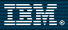

|

[ Solicitud
de Admisión ]
TOTAL FOCUS PROGRAM
Tecnologías de la Información para Managers
no técnicos
El conocimiento y la comprensión de los elementos
tecnológicos que integran las Nuevas Tecnologías,
se ha convertido en un reto y una necesidad para aquellos
profesionales que, no siendo técnicos, están
obligados a interrelacionarse con ellas o a proponer implementaciones
de las mismas para la mejor gestión de sus diversas áreas
funcionales.
Objetivos
El programa aporta al estudiante una comprensión
profunda y global de todos y cada uno de los elementos
tecnológicos que integran las telecomunicaciones,
las tecnologías de la información y el networking.
La comprensión de los elementos existentes, su funcionalidad
e interacción entre sí permitirá al
estudiante una mayor proactividad en sus relaciones con
los Departamentos Técnicos de sus compañías,
así como con sus proveedores de servicios tecnológicos;
una mayor capacitación en cuanto a la concreción
y adecuación de los recursos tecnológicos
que respondan eficazmente a las necesidades estratégicas
del negocio. Se comenzará con una visión
de aquellos elementos básicos de las tecnologías
de la información para adentrarse, posteriormente,
en sus elementos más complejos, así como
en su implicación y funcionalidad para con el negocio.
Al finalizar el curso se será capaz de implementar
y gestionar estrategias y políticas empresariales
capaces de obtener el máximo beneficio de las nuevas
tecnologías.
Dirigido a:
Directivos y Cuadros Intermedios provenientes de las áreas
no técnicas de la compañía. (Directores
Generales; Gerentes; RRHH y Formación; Direcciones
Comerciales, de Producto, Ventas, Márketing, Finanzas,
Logística; Asesoría Jurídica, etc).
Profesionales en general que necesiten comprender el funcionamiento
y la integración de la “sociedad de la Información” en
sus diferentes áreas de actividad.
Requisitos previos de conocimiento
Programa (*)
- Qué es y cómo se implementa el
Information Management
- Qué es y cómo funciona el Hardware
- Qué es y cómo funciona el Software
- Qué es y cómo opera la Gestión
y el Desarrollo de Bases de Datos
- Qué son y como funcionan las Telecomunicaciones
y las Redes (Networking)
- Cuáles son las Tecnologías usadas
en las Telecomunicaciones
- El Funcionamiento y los Elementos de Internet
- La Seguridad en las Telecomunicaciones
- La Implementación y la Gestión Tecnológica
para el Ebusiness
- La Implementación y la Gestión Tecnológica
para el Ecommerce
- La Implementación y la Gestión Tecnológica
para el CRM
- La Implementación y la gestión Tecnológica
para la Producción
- La Gestión Tecnológica para
con Proveedores
- La Gestión Tecnológica para Logística
- La Gestión Tecnológica para otras áreas
de la Compañía
- La Creación y el Uso del Business Intelligence
- El Ciclo de Vida del Desarrollo de los Sistemas
- Las Fases del Desarrollo e Implementación.
Estructuración
de las Funciones de los Sistemas de Información.
- La Gestión de las Tecnologías de
la Información
según las diversas áreas funcionales de la
compañía.
- Normativa aplicable
(*) La composición detallada de las cuestiones
tratadas en cada tema, se facilitará al alumno el
primer día de clase.
Metodología
Si bien éste es un curso enfocado desde una perspectiva
analítica y descriptiva, la participación
y asistencia a clase tiene carácter obligado. El
alumno deberá trabajar, de manera continuada, en
el estudio y comprensión de los elementos explicados.
Dado que este curso parte de los conceptos más básicos
para adentrarse posteriormente en la gestión de
la información y la funcionalidad de los sistemas,
la asimilación y puesta al día de los conocimientos
impartidos, fuera del horario de clase será un aspecto
fundamental para su conclusión con éxito.
Se realizará análisis de casos prácticos,
así como un examen de asimilación de conocimientos
a mitad de curso y otro al final del mismo.
Equipamiento
El Instituto de Nuevas Tecnologías de Vodafone, centro donde se impartirán las clases, está dotado de la tecnología punta necesaria para realizar cada uno de los Programas Tecnológicos de Columbia University.
Duración
80 horas
Lunes y Jueves de 19:00 a 22:00 h.
Convocatorias
Convocatoria
Primavera:
- 1 de abril de 2004: Jornada presentación
del instructor, temario detallado y metodología
de trabajo. (asistencia obligada).
- 1 de marzo de 2004: Inicio de las clases.
Convocatoria Otoño:
Por determinar
Universidad
Programa original de:
Al finalizar con éxito el programa, el alumno obtendrá Diploma
certificativo expedido por Columbia University, School
of Continuing Education.
Organiza

Patrocina

Promueven
|